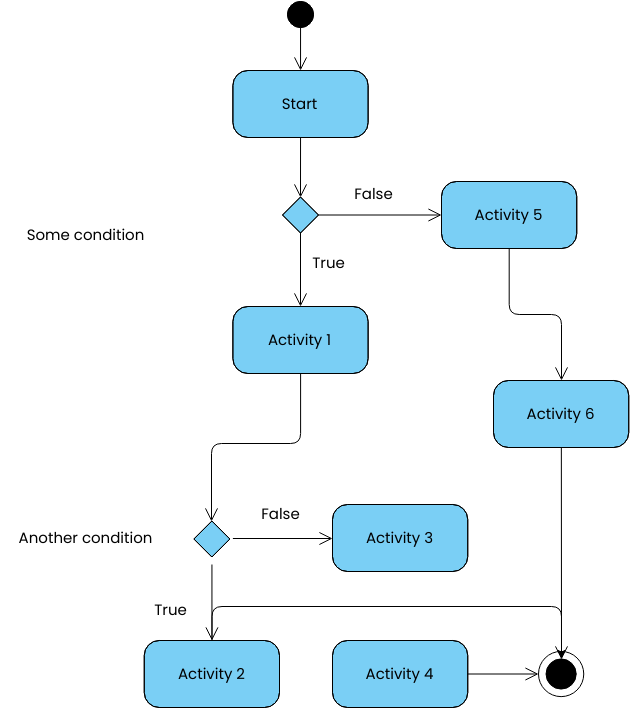
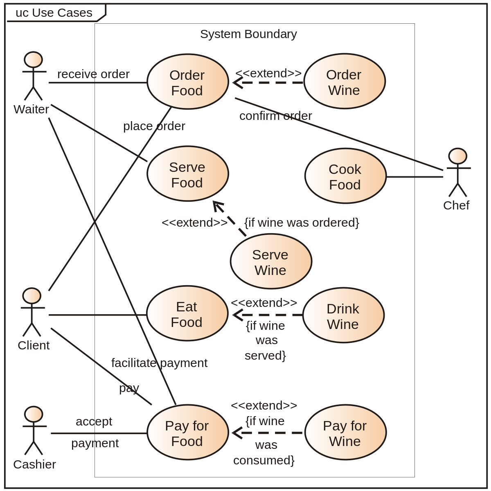
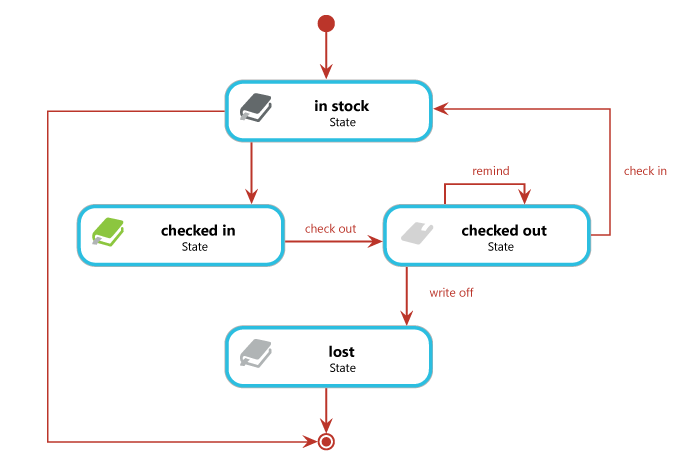
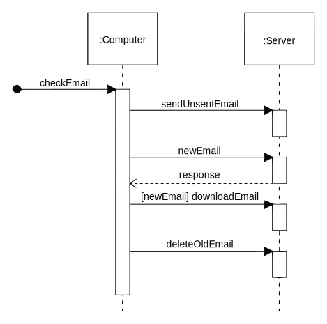
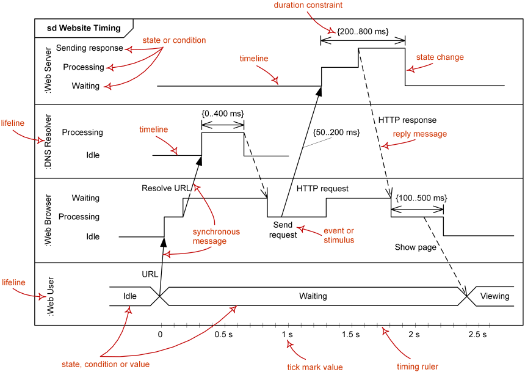
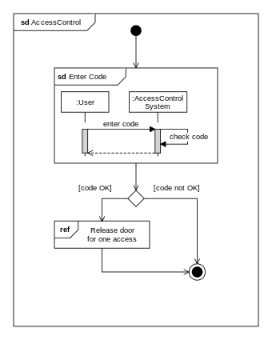

2. Use case diagrammid: Kasutusjuhtumite diagrammid illustreerivad ja m��ratlevad kas kogu s�steemi v�i s�steemi oluliste osade konteksti ja n�uded. Saate modelleerida keerukat s�steemi �he kasutusjuhtumi diagrammiga v�i luua s�steemi komponentide modelleerimiseks palju kasutusjuhtude diagramme. Tavaliselt t��tate v�lja kasutusjuhtude diagrammid projekti varases faasis ja viitate neile kogu arendusprotsessi v�ltel.
Kasutusjuhtude diagrammid on abiks j�rgmistes olukordades:
Enne projekti alustamist saate luua ettev�tte modelleerimiseks kasutusjuhtude diagramme, et k�ik projektis osalejad saaksid aru ettev�tte t��tajatest, klientidest ja tegevustest. N�udeid kogudes saate luua kasutusjuhtude diagramme, et j��dvustada s�steemin�udeid ja tutvustada teistele, mida s�steem peaks tegema. Anal��si- ja projekteerimisfaasis saate kasutada oma kasutusjuhtude diagrammidel olevaid kasutusjuhtumeid ja osalejaid, et tuvastada klassid, mida s�steem n�uab. Testimisetapis saate s�steemi testide tuvastamiseks kasutada kasutusjuhtude diagramme.

3. State diagrammid: Olekudiagramme on programmeerimisel kasutatud erinevate olekute kirjeldamiseks, milles s�steem v�ib olla aastak�mneid. Need ei piirdu programmeerimisega � igal s�steemil ja protsessil on olekud. Neid diagramme on kiirem luua kui tegevus- v�i j�rjestusskeeme, kuid need n�itavad v�hem teavet. Olekudiagrammid n�itavad, millised olekud viivad �ksteiseni ja mis k�ivitab olekumuutuse.

4. Sequence diagrammid: Olekudiagramme kasutatakse s�steemi k�itumise abstraktse kirjelduse andmiseks. Seda k�itumist anal��sitakse ja kujutatakse s�ndmuste jadaga, mis v�ivad toimuda �hes v�i mitmes v�imalikus olekus. Siinkohal "iga diagramm esindab tavaliselt �he klassi objekte ja j�lgib s�steemi kaudu selle objektide erinevaid olekuid"

5. Timing diagrammid: Ajastusdiagrammid keskenduvad tingimustele, mis muutuvad eluliinide sees ja nende vahel m��da lineaarset ajatelge. Ajastusskeemid kirjeldavad nii �ksikute klassifikaatorite k�itumist kui ka klassifikaatorite koostoimeid, keskendudes s�ndmuste toimumise ajale, mis p�hjustavad muutusi Eluliinide modelleeritud tingimustes.

6. Communication diagrammid: UML-i suhtlusskeemid, nagu ka j�rjestusdiagrammid � omamoodi interaktsiooniskeem, n�itavad, kuidas objektid omavahel suhtlevad. Kommunikatsiooniskeem on objekti diagrammi laiendus, mis n�itab objekte koos s�numitega, mis liiguvad �hest teise. Lisaks objektidevahelistele seostele on suhtlusskeemil n�idatud s�numid, mida objektid �ksteisele saadavad.

7. Interaction overview diagrammid:UML-i interaktsiooni �levaate diagrammid pakuvad interaktsioonimudeli k�rge abstraktsioonitaseme. See on tegevusdiagrammi variant, kus s�lmed on interaktsioonid v�i interaktsiooni esinemised. Interaktsioonide �levaate diagramm keskendub interaktsioonide juhtimise voo �levaatele, mis v�ib n�idata ka diagrammide vahelist tegevusvoogu. Teisis�nu saate �hendada "p�ris" diagrammid ja saavutada interaktsioonide �levaateskeemis diagrammide vahel k�rge navigeeritavuse.
